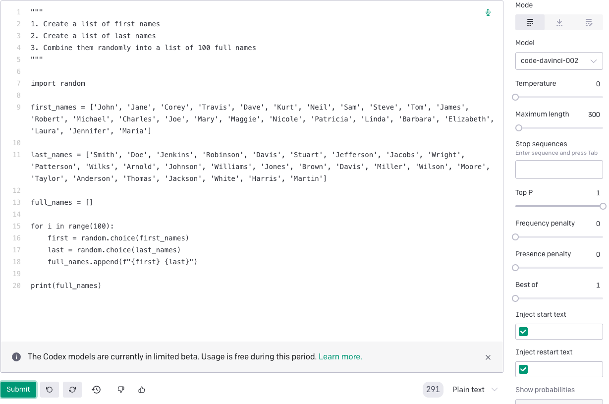

ChatGPT is game-changing, and, more generally, language models may be the most important dev tool of our generation. (It takes some humility to admit this, as we’re working on a dev tool for data scientists.)
But neither ChatGPT nor some larger descendent model will ever be able to write the most difficult pieces of our software given natural language descriptions of desired functionality. Here’s my argument for this claim, drawing on observations from Fred Brooks’ “No Silver Bullet” and Eric Evans’ Domain Driven Design.
1. The “hard part” of building software is specifying its behavior
Fred Brooks nailed “the hard part about building software” in “No Silver Bullet”:
The essence of a software entity is a construct of interlocking concepts: data sets, relationships among data items, algorithms, and invocations of functions… I believe the hard part of building software to be the specification, design, and testing of this conceptual construct, not the labor of representing it and testing the fidelity of the representation.
By converting English into code, ChatGPT helps us represent software in a programming language, but the hard part is representing it in English in the first place.
2. We can’t specify this behavior a priori
A big reason why specifying software in English is hard is that we don’t actually know what we want until we see it. Brooks nails it again here:
…the most important function that software builders do for their clients is the iterative extraction and refinement of the product requirements. For the truth is, the clients do not know what they want. They usually do not know what questions must be answered, and they almost never have thought of the problem in the detail that must be specified…Complex software systems are, moreover, things that act, that move, that work. The dynamics of that action are hard to imagine.
ChatGPT demos often operate on well-understood problems that have been solved many times over. Take this one, for example:

These demos can make us forget that, as Brooks says, the most important and difficult pieces of our software solve poorly understood problems that haven’t been solved before, and because of their novelty, it’s difficult to imagine what the solution looks like. If we can’t imagine the solution, we certainly can’t specify it in English.
3. Natural language misleads us about the adequacy of our specification
Even if we have a strong vision of our software’s behavior, specifying that behavior in English or any other natural language isn’t the best choice. Natural languages are messy, and this messiness can hide the vagueness in our specification. It can make us think we know more about the desired software than we actually know.
Eric Evans has already observed this in the context of Domain Driven Design:
A domain model can be the core of a common language for a software project. The model is a set of concepts built up in the heads of people on the project, with terms and relationships that reflect domain insight. These terms and interrelationships provide the semantics of a language that is tailored to the domain while being precise enough for technical development…When domain experts use this LANGUAGE in discussions with developers or among themselves…The domain experts (with the help of the developers) will also find areas where the precision of the model-based language exposes contradictions or vagueness in their thinking.
Thus, expressing our specification in code is not merely a means to bring our software vision to life. Rather, it is a crucial step towards stating our vision precisely.
Conclusion: Summarizing the arugment
ChatGPT doesn’t help with the hardest and most imporant part of building software: specifying it’s behavior in the context of poorly understood problems. It doesn’t help here because it needs a natural language description of the desired software’s behavior and generating that description is neither easy nor desirable. It’s not easy because we can’t imagine how our software should behave from the armchair, and it’s not desirable because natural language lacks the precison needed to adequately specify software.
Also, if you’re a data scientist who’s going to write code the old fashion way, check out our VSCode plugin. It adds a programmable analysis assistent to your Jupyter notebooks that automatically shows contextual data visualizations, tables, and data docs as you work in your Jupyter notebook. Use it to help you spot unexpected features in your data, get oriented in a new data set quickly, or to enforce best practices on your team.